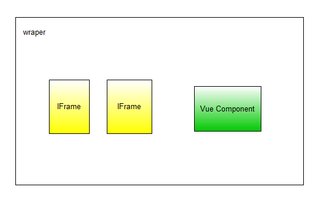

6.3. framework7¶
framework7 是一个针对手机的H5 Ui库。Director模块中主要使用该库作为移动端的构架。
6.3.2. framwork7前端¶

wraper示意图
外部封装页面¶
代码在 f7/wraper.html 和 js/f7_wrap.pack.js 内
- load_iframe(url,name,callback):
利用一个iframe来加载一个页面。
url : 地址。 name : Framework7需要每个页面都有一个name名字，注意尽量不要重复。 callback : 在子frame中，可以通过
windows.ret调用该函数，该回调函数接收一个参数。- load_vue_com(kw)：
- 利用一个vue component来作为一个页面。
kw={
url:url string,
com_html:html string, // html 字符串，例如 <div><my-com :name='test'></my-com></div>
data:{}, // Vue 实例的数据。
name:string, // Framework7页面唯一标示名
label:string, // 页面标题
callback:function,
}
callback的使用方法：
#在parent页面触发vue_com页面，
load_vue_com({other:xxx, callback:function(com_resp){
dosomething(com_resp)
}
#在vue_com页面中，在返回parent页面时，要调用注册的回调函数。
methods:{
back:function(){
this.$parent.callback(my_resp)
mainView.router.back()
}
}
还有很多函数需要整理
iframe子页面¶
继承主页 f7/base.html ;js代码 js/director_f7.pack.js
主要使用ff对象，调用parent页面，进行next页面加载或者返回last页面等操作。